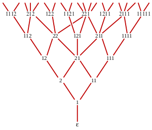
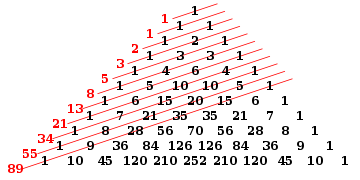

Fibonacci numbers are named after Italian mathematician Leonardo of Pisa, later known as Fibonacci.
They appear to have first arisen as early as 200 BC in work by Pingala on enumerating possible patterns of poetry formed from syllables of two lengths. In his 1202 book Liber Abaci, Fibonacci introduced the sequence to Western European mathematics, although the sequence had been described earlier in Indian mathematics.
-- Wikipedia --
Generate n first Fibonacci numbers
Type in an integer n < 1000:
| n | F(n) |